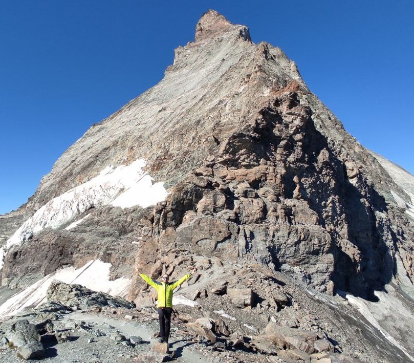

I received my Ph.D. in Computer Science from the University of Milan in 2019 and my M.Sc. in Molecular Biotechnology and Bioinformatics from the University of Milan in 2015.
🚀 I am a data scientist on a mission to advance biomedical genomics.
🎯 I am a self-driven and a lifelong learner with a flair for problem-solving.
⛑ I love mining relevant information out of data. My motto is: "The answer is there, blowing in the bulk".
🛠 I let the problem choose the tools: I am a Linux-savvy and fluent in R, Python, Bash, Perl.
🏔 If I am not on the shell, probably I am in the Swiss alps.
 My LinkedIn profile.
My LinkedIn profile.